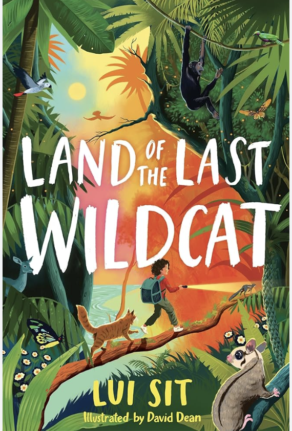
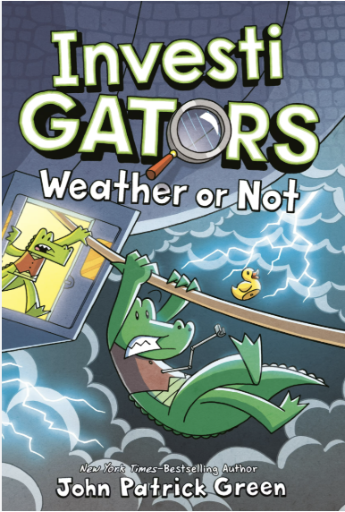
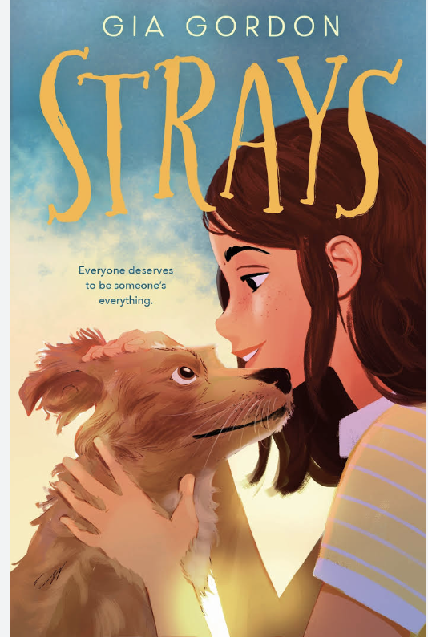

Land of the Last Wildcat
by Lui Sit
Stage Fright!(SpongeBob SquarePants Mysteries #3)
by David Lewman
InvestiGators: Weather or Not
by John Patrick Green
Strays
by Gia Gordon
© 2026 Amber Stacy. All rights reserved.